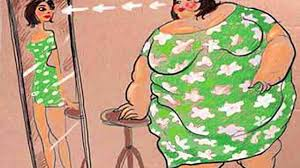

En este sitio te vamos a informar sobre los transtorno en la conducta alimentaria, te vamos a explicar que es, como se ve, en que te afecta,
y te dejamos un centro de ayuda para tratar a tiempo
este transtorno.
A continuacion te dejo alguns imagenes y nombre de los distintos tipos de T.C.A.
